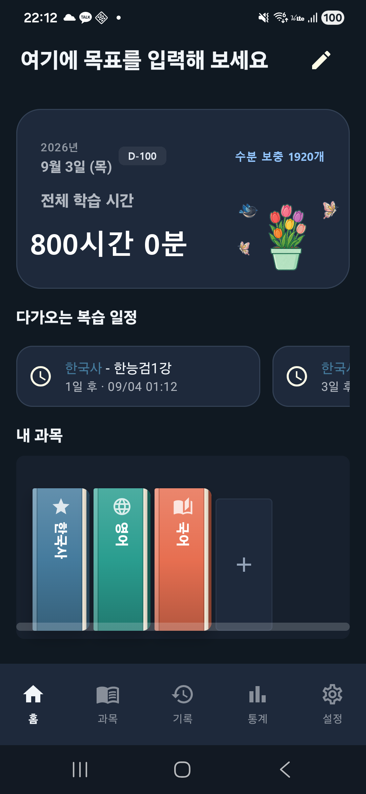

오늘 외운 것, 내일이면
70%가 사라집니다.
이미 늦었을 때 후회하지 마세요.
뇌과학이 증명한 복습 골든타임을 강제로 지켜드립니다.
그걸 막아주는 독종 타이머. 지금 바로 다운로드하고 압도적인 장기기억 효율을 극대화하세요.

합격자들은 알고, 불합격자들은 무시하는
단 하나의 차이
뼈 빠지게 공부하고 시험장에서 머리가 하얘지는 경험, 진절머리 나지 않으신가요? 기억이 증발하기 직전, 회독의민족이 무조건 다시 머릿속에 구겨 넣어 드립니다.
복습 계획은 회독의민족에 맡기고,
오직 공부에만 집중해 보세요
회독의민족이 가장 피 말리는 복습 골든 타임을 알아서 계산하고 알려줍니다.

당신을 책상에 묶어둘
가장 냉혹한 집중 타이머
스톱워치(무한 집중) 방식, 타이머(카운트다운) 방식은 물론 항상 켜두기(AOD), 화면 꺼두기 등 모든 옵션이 준비되어 있습니다. 딴짓은 원천 차단. 오직 생산성만 극대화하세요.


아무리 휘발성 강한 과목도
절대 잊을 수 없는 마법의 키워드 노트
정리노트를 만들어 단순 암기가 아닌 뇌에 박히는 완벽한 장기기억으로 만드세요. 메모와 사진을 첨부해 나만의 서브노트를 가장 지독하고 효율적으로 관리할 수 있습니다.
팩트 폭격 수치화
뼈아픈 과목별 밸런스 통계
"이번 주 이 과목 덜 한 것 같은데?" 직관적인 누적 차트와 주간 그래프로 당신이 놓치고 있는 취약 과목을 즉각적으로 파악하고 일정을 미세하게 조정하세요. 감이 아닌 수치를 믿으세요.


내가 안다고 착각했던 것들
무자비하게 털어주는 1:1 AI 조교
단순히 읽는 회독은 가짜 공부입니다. AI가 퀴즈를 내고 당신의 답변을 냉혹하게 평가해 줍니다. 진짜 아는 것과 모르는 것을 정확히 파악하여 메타인지의 정점을 찍으세요.
800시간의 피나는 몰입,
꽃을 피우고 날아드는 나비
공부는 길고 외로운 마라톤입니다. 회독의민족은 25분 집중마다 물뿌리개 아이템을 지급하여, 작은 씨앗에서부터 80단계에 걸쳐 나만의 꽃을 피워내는 특별한 몰입 보상 시스템을 제공합니다.
정확히 800시간을 완주하면 활짝 만개한 꽃과 함께 나비와 파랑새가 날아드는 영광스러운 연출을 선물합니다. 장미, 튤립, 해바라기 등 총 8종의 테마 화분을 수집하며 당신의 수험 여정을 아름다운 정원으로 가꾸어 보세요.

공부 밀도를 높이는
더 강력한 디테일
회독의민족의 모든 공간은 합격을 위해 설계되었습니다.
"공무원 1년 낭비할 뻔했는데, 이 앱이 절 살렸습니다. 폰이 강제로 공부하라고 패는 기분이에요."

지난 메모 빠른 검색

학습 내용 직관적 입력
"진짜 알림 지독하게 울리네요ㅋㅋㅋ 알림 끄려고 들어갔다가 결국 복습하고 나옵니다. 원문 통째로 외웠어요."
"휘발성 강한 개념이 많아 매일 복습 때문에 전전긍긍했는데, 회독 주기를 전부 계산해주니 이젠 공부만 하면 되네요."

안전한 데이터 백업

앱 환경 완벽 커스텀

취향에 맞는 언어 설정
800시간 화분 완성 컬렉션
합격을 좌우하는 것은
결국 '반복'입니다.
매일 밤 후회하며 플래너를 다시 쓰고 계신가요?
더 이상의 시행착오를 멈추고, 가장 과학적인 방법으로
합격까지의 시간을 단축하세요.
오직 합격자만이 경험한 폭발적인 공부 효율을 시작해 보세요.
무료로 다운로드하기 →